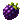

Orange
Peach
Apple + banana
Navy
Six hybrid Yoshis, their fruit, new challenges and a Workshop for creating custom PC adventures.
No sections match this search.
| Story | Campaign and page progression. |
| Trial | Replay accessible levels, collect turquoise coins and complete challenges. |
| Creation | Editor and custom games in the Workshop window. |
| Statistics and achievements | Challenges, progression and shop. |
| Hybrid mode | Purchasable variant requiring all 24 Trial clears. |
| Options | Settings and language for new menus. |
| Practice | Native practice, without progression achievements. |
New screens offer FR/EN. Native content from the USA ROM has not received a complete French translation.
They join the six classic colours plus white and black: fourteen colours in total, unlocked through progression. Each hybrid likes its special fruit and the two classic fruits of its colour pair.
Peach
Apple + banana
Navy

Blackberry
Apple + grapes
Golden yellow
Blueberry
Grapes + watermelon
Raspberry
Green pear
Banana + watermelon
Hazelnut brown
Plum
Apple + watermelon
Cream beige
Kiwi
Grapes + banana
Pale pink
The matching special fruit gives its hybrid Yoshi 4 points and +4 health, within the game’s health limit. Its two classic favourites keep their usual bonus.
Original Yoshis have one classic and three hybrid favourites. Pink follows red’s preferences; light blue follows blue’s. White and black like all fruit, including hybrids at +2.
Story and Trial replace 25% of apples, bananas, watermelons and grapes with compatible hybrids. Hybrid mode raises this to 75%. Melons are unchanged. Returning to a room preserves the level’s initial selection.
Hybrid rewards average their two base colours, rounding up. The native ×2 is retained when enemies are defeated without being eaten, before combos. In Hybrid mode, a preferred hybrid Shy Guy gives 3 points eaten or 6 otherwise defeated.
Colours after a ground spin count; eggs follow the rules of eaten enemies. Enemies intended to award no points remain at zero to prevent endless score farming.
20 unique turquoise coins per Trial level: 480 in total. They give 3 points, with currency saved immediately, including after a death or exit.
Previously collected coins turn white: they still give 3 points, but no additional currency.
Objectives make an egg eligible; collecting it and finishing the level are then required. They include the first Story campaign, the four level columns and opening all Trial access. Only one hybrid egg appears at a time per level, at the white Shy Guy location. In Story, that location must be empty of the white Shy Guy.
Story, ordinary Trial and Hybrid mode contribute to the same challenges. Practice and editor-created levels are excluded.
Add the other rooms completes an older creation without losing edited objects.
Keep the complete portable folder when moving the installation. Ordinary progress is in pc/profiles/content-personal, creations in pc/content. Tests and custom games use separate profiles.
Developer tools support importing normal Project64 saves; that tool is not included in this archive. Emulator Save States are not interchangeable with ordinary saves. Before an update, close the game and keep a backup of progress.
ROM import does not replace currency, purchases, high scores or previously obtained Yoshis.
Two controllers on one PC and hosted play between two PCs. Shared fruit, optional Yoshi interactions, eggs passing through the teammate. This mode is not playable yet.
Eight battles based on the four world-3 bosses and variants, excluding Bowser. Terrain editing, a complete translation and Linux validation are also still in development.
Use an original USA Yoshi’s Story image, not an older patched project ROM. All three N64 byte orders are supported, then the exact hash is checked.
In View, choose Show entry point or use the wheel. Selecting a passage also centres the view.
The editor shows a static preview of principal terrain. Backgrounds and dynamic objects are checked in the running game.
Include version, system, level, mode, Yoshi and reproduction steps. A log excerpt without personal paths may help. The file is not uploaded automatically.
First public beta: local ROM import, fourteen unlockable colours and the Workshop terrain preview. Automated checks do not replace complete manual playthroughs.
Linux: experimental, with no validated package offered here. No ROM downloads.